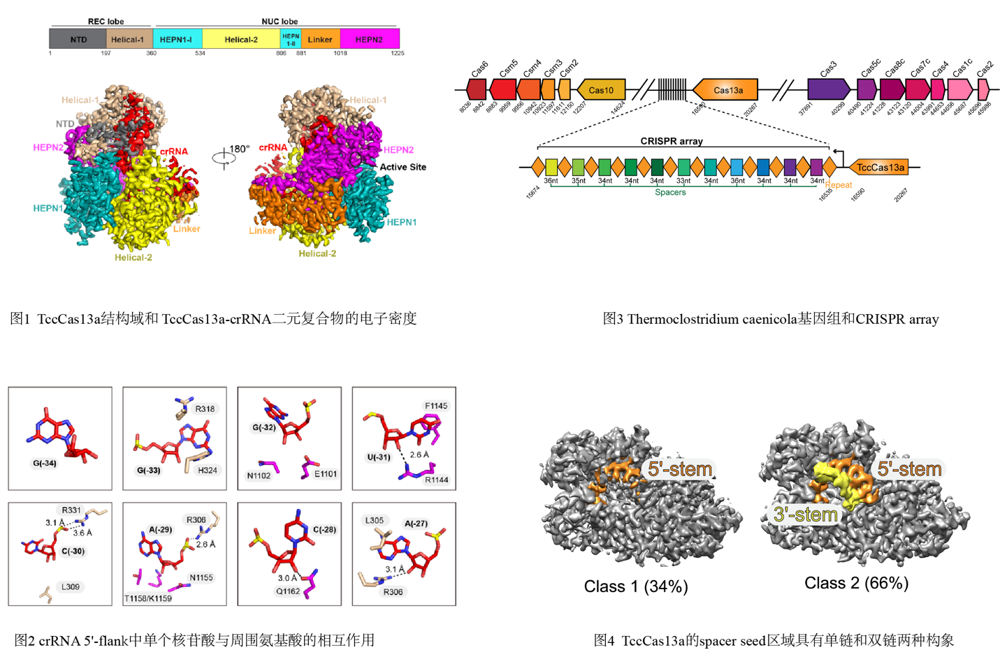

在CRISPR-Cas系统的biogenesis阶段，CRISPR array会被转录成前体RNA，并被加工生成短的成熟的crRNA，以此引导Cas蛋白来干扰相应的侵略基因组。如果前体RNA无法被加工成短的crRNA，则会极大削弱Cas蛋白的靶切割活性。大多数的Cas13a有两种独立的核酸酶活性，分别用于前体RNA的加工和单链RNA的切割。2016年，Jennifer
Doudna课题组发现， Herbinix hemicellulosilytica菌来源的Cas13a缺失了前体RNA加工活性。2021年，Magdy Mahfouza 课题组发现Thermoclostridium caenicola嗜热菌来源的Cas13a（TccCas13a）也缺失了前体RNA加工活性。针对这一现象，作者对TccCas13a展开了相应的机制探索。
本研究首先解析了2.8Å分辨率的TccCas13a-crRNA二元复合物（图1）。 TccCas13a的crRNA具有长的5'-flank，与Helical-1和HEPN2结构域有较多的相互作用。在5'-flank的末端，TccCas13a缺失了前体RNA加工所必要的氨基酸。在整个5'-flank区域，也未能发现适当的亲核基团可以进攻5'-flank核苷酸的2'-OH（图2），这充分地解释了TccCas13a无法加工前体RNA的原因。分析基因组发现，在TccCas13a的上下游，Thermoclostridium caenicola编码I-C型和III-A型CRISPR-Cas系统，它们分别包含具有前体RNA加工活性的Cas5c和Csm5核酸酶（图3），这暗示TccCas13a很可能借用了Cas5c或Csm5完成自身前体RNA的加工。
除此之外，该研究还有以下发现。第一，TccCas13a crRNA的spacer
seed区域具有单链和双链两种构象（图4），由此可以推断TccCas13a可能存在一种靶RNA识别的“Safeguard”机制，以确保seed区域配对的严谨性。第二，TccCas13a的NTD结构域处于缺失的状态，而在其他的Cas13a结构中NTD结构域均参与了关键的相互作用。最后，通过解析TccCas13a的空结构，表明了crRNA结合TccCas13a所引发的相关结构域和活性中心的变化。
该研究仍然存在相当的不足。首先，作者虽然尝试多种组装方法，但是仍然未能成功解析TccCas13a激活状态的三元复合物结构。其次，提高Cas13a的热稳定性将非常有利于核酸检测的应用，但是尝试多个表面氨基酸的突变并未筛选到热稳定性明显提高的突变体。
